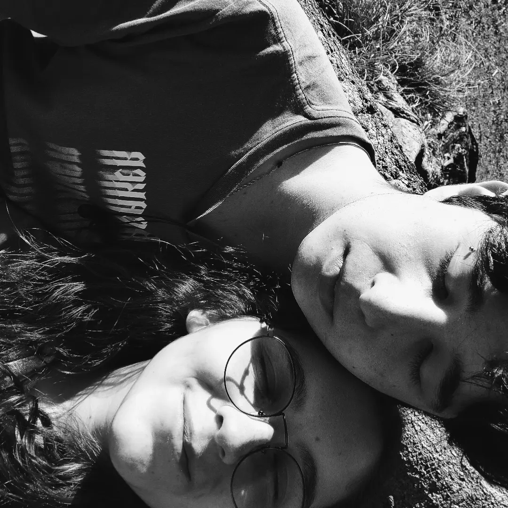

Antes de continuar, OLHA NOIZE!!


Depois de milênios e milênios, duas estrelas se cruzaram e o destino do mundo ficou mais leve!!!
- Desde o comecinho, quando eu te via só pela telinha do celular no instagram. Eu via uma faísca...
E eu descobri! era ela quem tinha me mandado uma cartinha!!! ✨✨
Com muito nervosismo, com muito muito afeto, e muito amor, essa faisca cresceu... ESTAMOS NAMORANDO!!!!✨✨✨
E olha só, INFO + ADM deu nisso aqui >>>>>>
Mas espera ai!!!

Estamos aqui por um motivo............
OQUE SERA???